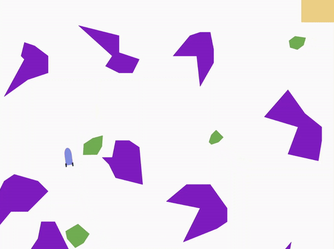
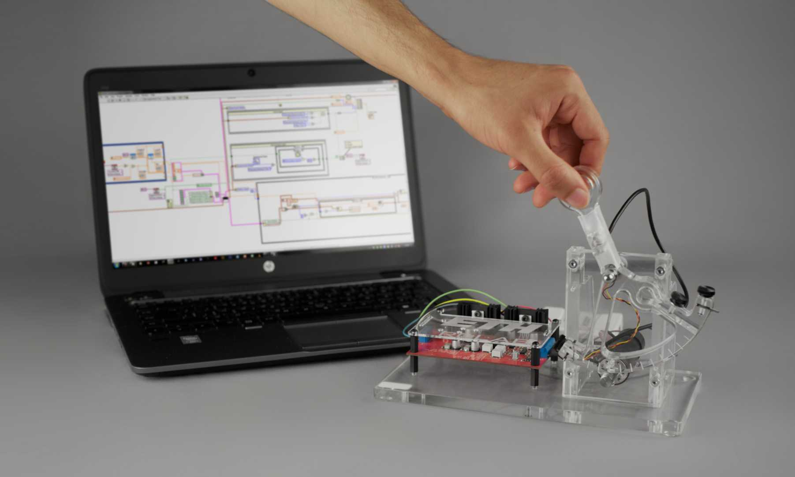

About me

Publications
| | IEEE/RSJ International Conference on Intelligent Robots and Systems (IROS) 2024 (Oral presentation)
A novel range-VIO method that fuses altimeter measurements with a visual-odometry framework, and eliminates the need for any type of ground planarity assumption. |
News
| 04/2022 | I joined Verity AG in Zürich as a System and Estimation engineer |
|---|---|
| 09/2021 | I was TA at the Rehabilitation Engineering Lab (ETH Zürich) for the course of Physical Human Robot Interaction |
| 07/2021 | I took part in the Robotics Summer School organized by the RobotX initiative at ETH Zürich |
| 07/2020 | I completed my BSc studies after defending my Thesis named Defect Detection in the Tyre Manufacturing Process using Convolutional Neural Networks (project in partnership with Pirelli Tyres S.p.A.) |
Projects
 |
Mixed reality interface on a Microsoft Hololens 2, with which the user is able to remotely control a robotic arm and perform basic assembly tasks using hand and eye tracking. |
 |
An accurate toolbox for localization and pose estimation of ANYmal without external sources like depth cameras or QR codes. |
 |
A learning-based solution that converts any existing video dataset recorded with conventional cameras to synthetic event data. |
 |
An online self-supervised SLAM pipeline for real-time dense reconstruction. |
 |
Multi-task Learning for semantic segmentation, depth estimation and 3D object detection for autonomous driving scenes. |
|  |
Implementation of a path planning pipeline in a dynamic environment. Global path planning, local path planning, and obstacle avoidance for navigating a spacecraft to a goal region while avoiding static and dynamic asteroids. |
 |
Implementation of a skateboarding game using Unity3D and Blender. Every aspect, from crafting the main 3D models to animating characters and designing the game's logic and levels, was meticulously implemented from scratch. |
|  |
Implementation of an admittance controller with inner position/velocity loop on an haptic device, with the aid of a servo-amplifier and tachometer for motor control. |
Personal
I love playing the piano, photography, cooking and traveling. Check out my Instagram profile for more pictures. I have practiced karate for 11 years achieving black belt. My hobbies can be summarized by the following slide:

Provehito in Altum.